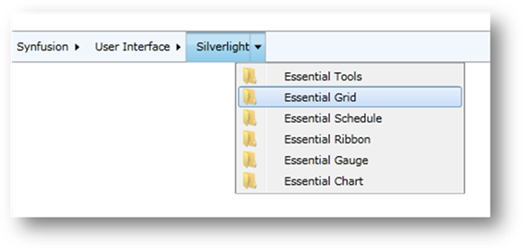

Data binding is the process of establishing a connection between the application UI and business logic.
To bind to a Business Object collection, the ItemsSource property and ItemTemplate should be used in HierarchyNavigator. HierarchicalDataTemplate should be used for each item template.
1. Create a class named HierarchyItem.
|
C#
public class HierarchyItem { public string ContentString { get; set; } public HierarchyItem(string content, params HierarchyItem[] myItems) { this.ContentString = content;
itemsObservableCollection = new ObservableCollection<HierarchyItem>(); foreach (var item in myItems) { itemsObservableCollection.Add(item); } HierarchyItems = itemsObservableCollection; }
private ObservableCollection<HierarchyItem> itemsObservableCollection; public ObservableCollection<HierarchyItem> HierarchyItems { get { return itemsObservableCollection; } set { if (itemsObservableCollection != value) { itemsObservableCollection = value; } } } } |
2. Create a collection for ItemsSource to bind with.
|
C#
public class HierarchicalItemsSource : ObservableCollection<HierarchyItem> { public HierarchicalItemsSource() { this.Add(new HierarchyItem("Syncfusion", new HierarchyItem("User Interface", new HierarchyItem("Silverlight"), new HierarchyItem("WPF"), new HierarchyItem("MVC")), new HierarchyItem("Reporting Edition", new HierarchyItem("IO"), new HierarchyItem("PDF generator"), new HierarchyItem("WPF") ))); } } |
3. In XAML, bind the collections to the ItemsSource property of the HierarchyNavigator control.
|
XAML
<syncfusion:HierarchyNavigator Name="hierarchyNavigator2"> <syncfusion:HierarchyNavigator.ItemsSource> <local:HierarchicalItemsSource /> </syncfusion:HierarchyNavigator.ItemsSource> <syncfusion:HierarchyNavigator.ItemTemplate> <System_Windows:HierarchicalDataTemplate ItemsSource="{Binding HierarchyItems}"> <TextBlock Text="{Binding ContentString}" Margin="2,0" /> </System_Windows:HierarchicalDataTemplate> </syncfusion:HierarchyNavigator.ItemTemplate> </syncfusion:HierarchyNavigator> |
To bind XML data to a HierarchyNavigator control, you need to convert the XML to a collection and then bind the collection using the ItemsSource property.
The XML below is used in this example (attached in the sample project named HierarchyItems.xml).
|
XML
<categories> <category name="Synfusion"> <category name="User Interface"> <category name="Silverlight"> <category name="Essential Tools" /> <category name="Essential Grid" /> <category name="Essential Schedule" /> <category name="Essential Ribbon" /> <category name="Essential Gauge" /> <category name="Essential Chart" /> </category> <category name="WPF" /> <category name="MVC" /> <category name="ASP .Net" /> </category> </category> </categories> |
1. Create a separate class that represents the node in an XML document. Here a class named Category has been created.
|
C#
public class HierarchyItem { public string ContentStr { get; set; } ObservableCollection<HierarchyItem> hierarchyItems = new ObservableCollection<HierarchyItem>(); public ObservableCollection<HierarchyItem> HierarchyItems { get { return hierarchyItems; } set { hierarchyItems = value; } } } |
2. Convert XML data to a collection, and then bind the collection to the ItemsSource property of HierarchyNavigator.
|
C#
public partial class MainPage : UserControl { public MainPage() { InitializeComponent(); CreateXMLDataItemsSource(); }
private void CreateXMLDataItemsSource() { ObservableCollection<HierarchyItem> categories = new ObservableCollection<HierarchyItem>(); XDocument XMLItemSource = XDocument.Load("/SampleHierarchicalNavigator_2010;component/HierarchyItems.xml"); categories = this.GetCategories(XMLItemSource.Element("categories")); hierarchyNavigator1.ItemsSource = categories; }
private ObservableCollection<HierarchyItem> GetCategories(XElement element) { var item = from category in element.Elements("category") select category;
var itemsObservableCollection = new ObservableCollection<HierarchyItem>();
foreach (var itm in item) { var subitm = new HierarchyItem(); subitm.ContentStr = itm.Attribute("name").Value; subitm.HierarchyItems = this.GetCategories(itm); itemsObservableCollection.Add(subitm); }
return itemsObservableCollection; } } |
3. Below is the code for the HierarchyNavigator. Since data is in a hierarchical structure, you need to declare HierarchicalDataTemplate (refer to Template Customizing).
|
XAML
<syncfusion:HierarchyNavigator VerticalAlignment="Center" Name="hierarchyNavigator1" Height="30"> <syncfusion:HierarchyNavigator.ItemTemplate> <System_Windows:HierarchicalDataTemplate ItemsSource="{Binding HierarchyItems}"> <TextBlock Margin="10,0,0,0" Text="{Binding ContentStr}" Grid.Column="0"/> </System_Windows:HierarchicalDataTemplate> </syncfusion:HierarchyNavigator.ItemTemplate> </syncfusion:HierarchyNavigator> |
The image below shows the output of the above code—items bound to XML data.

Figure 1024: Items bound to XML data
XML data can be bound through WCF services by enabling a Silverlight application for WCF Services.
Steps to follow:
1. Create XML and a
class object. Refer to the XML data-binding class and the XML used in the
2. Binding XML
data
section.
3. To create a WCF service application, add an ASP.NET Web application with the Silverlight sample application, and then add a new Silverlight-enabled WCF Service item to the Web application.
4. Create an Observable Collection from XML data to bind in ItemsSource, as seen below in the service class that has a return type of ObservableCollection.
|
C# |
|
[ServiceContract(Namespace = "")] [AspNetCompatibilityRequirements(RequirementsMode = AspNetCompatibilityRequirementsMode.Allowed)] public class Service1 { [OperationContract] public ObservableCollection<HierarchyItem> CreateXMLDataItems() { ObservableCollection<HierarchyItem> categories = new ObservableCollection<HierarchyItem>(); XDocument XMLItemSource = XDocument.Load("YourXMLLocation/HierarchyItems.xml"); categories = this.GetCategories(XMLItemSource.Element("categories")); return categories; }
private ObservableCollection<HierarchyItem> GetCategories(XElement element) { var item = from category in element.Elements("category") select category;
var itemsObservableCollection = new ObservableCollection<HierarchyItem>();
foreach (var itm in item) { var subitm = new HierarchyItem(); subitm.ContentStr = itm.Attribute("name").Value; subitm.HierarchyItems = this.GetCategories(itm); itemsObservableCollection.Add(subitm); }
return itemsObservableCollection; } } |
To connect WCF services with the sample Silverlight application, utilize the code snippets below (also refer to Binding data with WCF Service under the How To section).
|
C#
namespace WCFServicesInHierarchy { public partial class MainPage : UserControl { public MainPage() { InitializeComponent(); } }
public class CustomSource { public CustomSource() { //This loads WCF Service Service1Client client = new Service1Client(); client.CreateXMLDataItemsCompleted += new EventHandler<CreateXMLDataItemsCompletedEventArgs>(client_CreateXMLDataItemsCompleted); client.CreateXMLDataItemsAsync();
this.Categories = new ObservableCollection<HierarchyItem>(); }
private void client_CreateXMLDataItemsCompleted(object sender, CreateXMLDataItemsCompletedEventArgs e) { if (e.Error == null && e.Result != null) { foreach (HierarchyItem c in e.Result) { this.Categories.Add(c); } } }
public ObservableCollection<HierarchyItem> Categories { get; set; } } } |
|
XAML
<UserControl x:Class="WCFServicesInHierarchy.MainPage" xmlns="http://schemas.microsoft.com/winfx/2006/xaml/presentation" xmlns:x="http://schemas.microsoft.com/winfx/2006/xaml" xmlns:local="clr-namespace:WCFServicesInHierarchy" xmlns:common="clr-namespace:System.Windows;assembly=System.Windows.Controls" xmlns:syncfusion="clr-namespace:Syncfusion.Windows.Tools.Controls;assembly=Syncfusion.Tools.Silverlight"> <UserControl.DataContext> <local:CustomSource/> </UserControl.DataContext> <Grid x:Name="LayoutRoot" Background="White"> <syncfusion:HierarchyNavigator Name="hierarchyNavigator1" VerticalAlignment="Center" ItemsSource="{Binding Categories}"> <syncfusion:HierarchyNavigator.ItemTemplate> <common:HierarchicalDataTemplate ItemsSource="{Binding HierarchyItems}"> <Border> <TextBlock Text="{Binding ContentStr}" Margin="2,0"/> </Border> </common:HierarchicalDataTemplate> </syncfusion:HierarchyNavigator.ItemTemplate> </syncfusion:HierarchyNavigator> </Grid> </UserControl> |